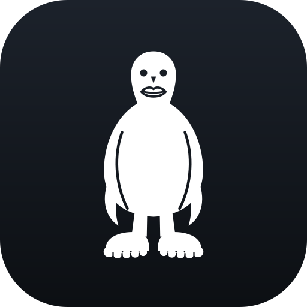
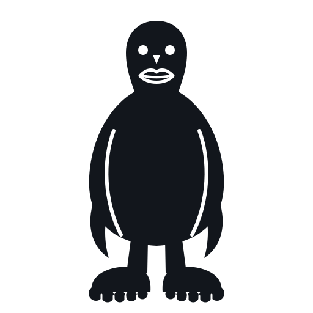
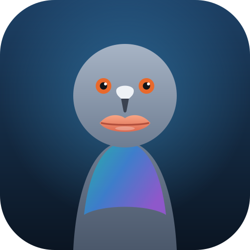
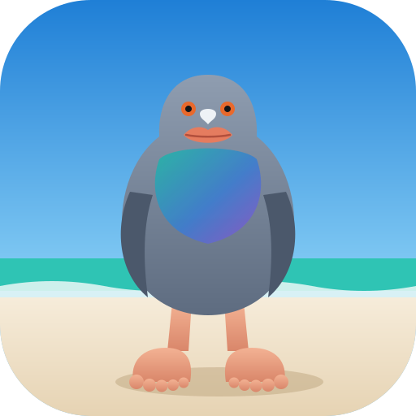
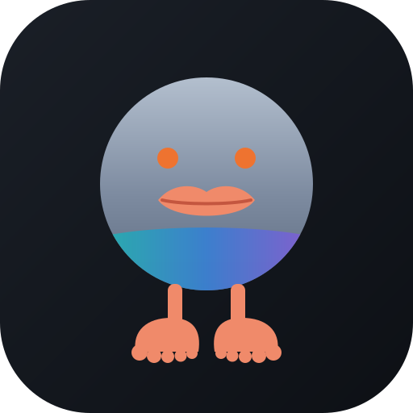

<title>비둘기 엔진 아이콘</title>
<meta name="claude:viewport-fit-sides" content="cover">
<link rel="preconnect" href="https://fonts.googleapis.com">
<link rel="preconnect" href="https://fonts.gstatic.com" crossorigin>
<link rel="stylesheet" href="https://fonts.googleapis.com/css2?family=Inter:wght@400;500;600;700&family=Space+Grotesk:wght@500;700&display=swap">
<style>
/* Layout: three option columns, each a stack of hero icon, size ladder, and in-context previews. */
:root{
  --bg:#eef1f4; --card:#ffffff; --ink:#141a22; --dim:#5d6878; --line:#d8dee6;
  --accent:#3a7fd0; --tile-dark:#151a21; --tile-light:#ffffff;
  --display:'Space Grotesk','Inter',system-ui,sans-serif;
  --sans:'Inter',system-ui,-apple-system,'Segoe UI','Apple SD Gothic Neo','Malgun Gothic',sans-serif;
}
@media (prefers-color-scheme:dark){:root:not([data-theme="light"]){--bg:#0e1217;--card:#161c24;--ink:#e6eaf0;--dim:#94a0b0;--line:#27303b;--accent:#6aa7ec;color-scheme:dark}}
:root[data-theme="dark"]{--bg:#0e1217;--card:#161c24;--ink:#e6eaf0;--dim:#94a0b0;--line:#27303b;--accent:#6aa7ec;color-scheme:dark}
*{box-sizing:border-box}
body{background:var(--bg);color:var(--ink);font:15px/1.55 var(--sans)}
.wrap{max-width:1160px;margin:0 auto;padding-block:40px 64px;padding-left:max(16px,env(safe-area-inset-left,0px));padding-right:max(16px,env(safe-area-inset-right,0px));display:flex;flex-direction:column;gap:28px}
header h1{font:700 clamp(26px,4vw,38px)/1.15 var(--display);margin:0;letter-spacing:-.02em;text-wrap:balance}
header p{margin:8px 0 0;color:var(--dim);max-width:62ch}
.grid{display:grid;grid-template-columns:repeat(3,minmax(0,1fr));gap:18px}
.card{background:var(--card);border:1px solid var(--line);border-radius:14px;padding:20px;display:flex;flex-direction:column;gap:16px;min-width:0}
.tag{font:600 11px/1 var(--sans);letter-spacing:.08em;text-transform:uppercase;color:var(--accent)}
.card h2{margin:4px 0 0;font:700 22px/1.2 var(--display)}
.card p{margin:0;color:var(--dim);font-size:14px}
.hero{display:grid;place-items:center;padding:8px 0}
.hero img{width:min(220px,100%);height:auto;filter:drop-shadow(0 12px 24px rgba(10,20,40,.25))}
.ladder{display:grid;grid-template-columns:1fr 1fr;gap:8px}
.tile{border-radius:10px;padding:12px;display:flex;align-items:flex-end;justify-content:center;gap:12px;border:1px solid var(--line)}
.tile.dark{background:var(--tile-dark)}.tile.light{background:var(--tile-light)}
.cap{font-size:12px;color:var(--dim);display:flex;justify-content:space-between}
.lockup{display:flex;align-items:center;gap:12px;padding:12px 14px;border-radius:10px;background:var(--tile-dark);color:#e8edf3}
.lockup img{width:40px;height:40px}
.lockup b{display:block;font:700 16px/1.1 var(--display)}
.lockup span{font-size:11px;letter-spacing:.14em;color:#93a0b2}
.menubar{display:flex;align-items:center;gap:8px;background:#14171b;border-radius:8px;padding:6px 10px;color:#c9cfd7;font-size:12px}
.menubar img{width:16px;height:16px}
.menubar b{font:700 11px/1 var(--display);letter-spacing:.12em;color:#e9eef4;margin-right:6px}
.notes{background:var(--card);border:1px solid var(--line);border-radius:14px;padding:20px 22px}
.notes h3{margin:0 0 8px;font:700 18px/1.2 var(--display)}
.notes ul{margin:0;padding-left:18px;color:var(--dim)}
.notes li+li{margin-top:4px}
.featrow{display:grid;grid-template-columns:repeat(3,minmax(0,1fr));gap:12px;align-items:stretch}
.tile.big{padding:18px;align-items:center}
.tile.big img{width:min(200px,100%);height:auto}
.feat .lockup,.feat .menubar{align-self:center}
@media (max-width:900px){.grid,.featrow{grid-template-columns:minmax(0,1fr)}}
</style>

<main class="wrap">
  <header>
    <h1>비둘기 엔진 아이콘 시안</h1>
    <p>보내 주신 비둘기(사람 입술, 사람 발)를 바탕으로 직접 그린 벡터 아이콘 세 가지입니다. SVG라서 16px부터 1024px까지 어떤 크기로 내보내도 선명합니다.</p>
  </header>

  <section class="card feat">
    <div><div class="tag">D안 · 요청하신 흰색 실루엣</div><h2>White Mark</h2></div>
    <div class="featrow">
      <div class="tile dark big"></div>
      <div class="tile big" style="background:transparent;border-color:transparent"></div>
      <div class="tile light big"></div>
    </div>
    <p>배경을 없애고 전신을 흰색 한 가지로. 얼굴은 눈, 부리, 입술 윤곽만 살짝 남겼고, 사람 발은 그대로 살렸습니다. 유니티·언리얼 로고처럼 단색이라 어떤 배경에도 올릴 수 있고, 밝은 배경용 검은색 버전도 함께 만들었습니다.</p>
    <div class="featrow">
      <div class="tile dark"></div>
      <div class="lockup"><div><b>비둘기 엔진</b><span>BIDULGI ENGINE</span></div></div>
      <div class="menubar"><b>BIDULGI</b>File Edit Assets GameObject Blueprint</div>
    </div>
  </section>

  <section class="grid">
    <article class="card">
      <div><div class="tag">A안</div><h2>Portrait</h2></div>
      <div class="hero"></div>
      <p>정면 얼굴을 크게. 깊은 바다색 배경 위로 무지갯빛 목털과 입술이 가장 먼저 보입니다. 앱 아이콘으로 가장 무게감이 있습니다.</p>
      <div>
        <div class="cap"><span>64 · 32 · 16 px</span><span>어두운 배경 / 밝은 배경</span></div>
        <div class="ladder">
          <div class="tile dark"></div>
          <div class="tile light"></div>
        </div>
      </div>
      <div class="lockup"><div><b>비둘기 엔진</b><span>BIDULGI ENGINE</span></div></div>
      <div class="menubar"><b>BIDULGI</b>File Edit Assets GameObject Blueprint</div>
    </article>

    <article class="card">
      <div><div class="tag">B안</div><h2>Beach</h2></div>
      <div class="hero"></div>
      <p>원본 사진의 해변 장면을 그대로 살린 전신 버전. 사람 발이 확실히 보여서 가장 재미있고 기억에 남습니다. 대신 작은 크기에서는 디테일이 뭉칩니다.</p>
      <div>
        <div class="cap"><span>64 · 32 · 16 px</span><span>어두운 배경 / 밝은 배경</span></div>
        <div class="ladder">
          <div class="tile dark"></div>
          <div class="tile light"></div>
        </div>
      </div>
      <div class="lockup"><div><b>비둘기 엔진</b><span>BIDULGI ENGINE</span></div></div>
      <div class="menubar"><b>BIDULGI</b>File Edit Assets GameObject Blueprint</div>
    </article>

    <article class="card">
      <div><div class="tag">C안</div><h2>Mark</h2></div>
      <div class="hero"></div>
      <p>둥근 머리, 입술, 두 발만 남긴 기호형. 16px에서도 형태가 읽히고, 로고·파비콘·스플래시에 두루 쓰기 좋습니다. 가장 세련되고 확장성이 높습니다.</p>
      <div>
        <div class="cap"><span>64 · 32 · 16 px</span><span>어두운 배경 / 밝은 배경</span></div>
        <div class="ladder">
          <div class="tile dark"></div>
          <div class="tile light"></div>
        </div>
      </div>
      <div class="lockup"><div><b>비둘기 엔진</b><span>BIDULGI ENGINE</span></div></div>
      <div class="menubar"><b>BIDULGI</b>File Edit Assets GameObject Blueprint</div>
    </article>
  </section>

  <section class="notes">
    <h3>고를 때 참고</h3>
    <ul>
      <li>엔진 아이콘은 작업 표시줄(16~32px)과 에디터 메뉴바에서 가장 자주 보입니다. 작은 크기에서 읽히는지가 중요합니다.</li>
      <li>C안을 주 아이콘으로 쓰고, A안이나 B안을 스플래시 화면이나 홍보 이미지로 함께 쓰는 조합도 가능합니다.</li>
      <li>원본 사진은 인터넷 이미지라 저작권이 불분명합니다. 이 아이콘들은 사진을 쓰지 않고 새로 그린 벡터라서 그대로 쓸 수 있습니다.</li>
    </ul>
  </section>
</main>
